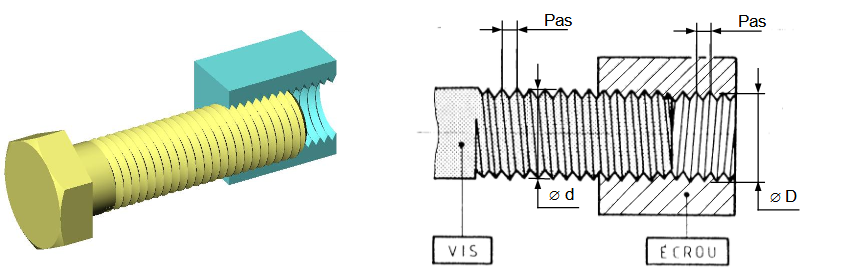

Un Filetage est une rainure hélicoïdale creusée sur, ou dans, un cylindre plein, ou creux.
- Quand le filetage est réalisé à l’extérieur d’un cylindre plein (arbre), on parle d’une Tige Filetée (vis);
- Quand le filetage est réalisé à l’intérieur d’un cylindre creux (perçage), on parle d’un Trou taraudé (écrou).
Pour qu’il y ait montage de la vis dans l’écrou, il faut que les deux éléments aient les mêmes caractéristiques :
Ønominal, pas, profil, sens de l’hélice
